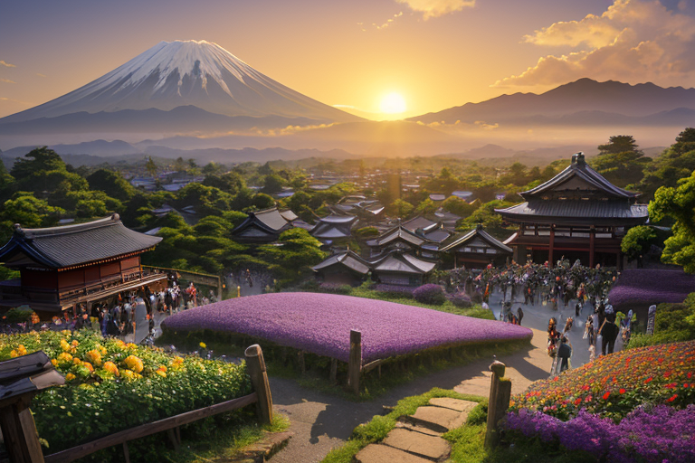
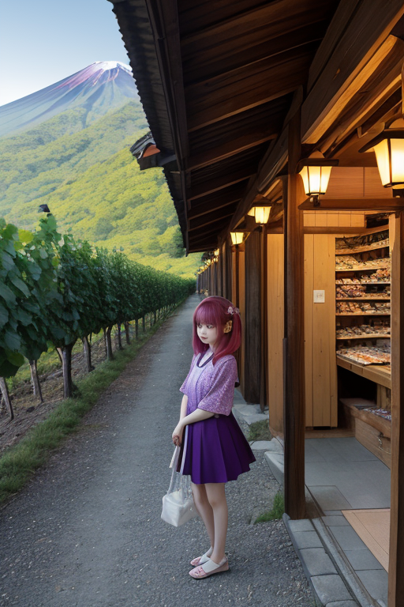
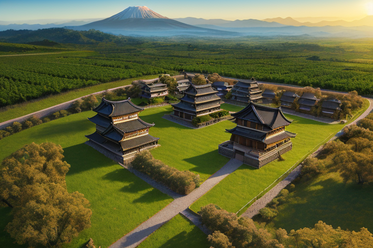
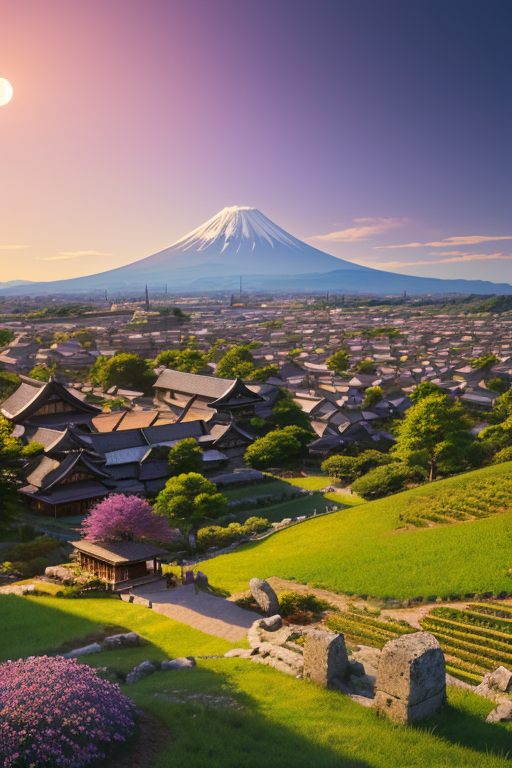
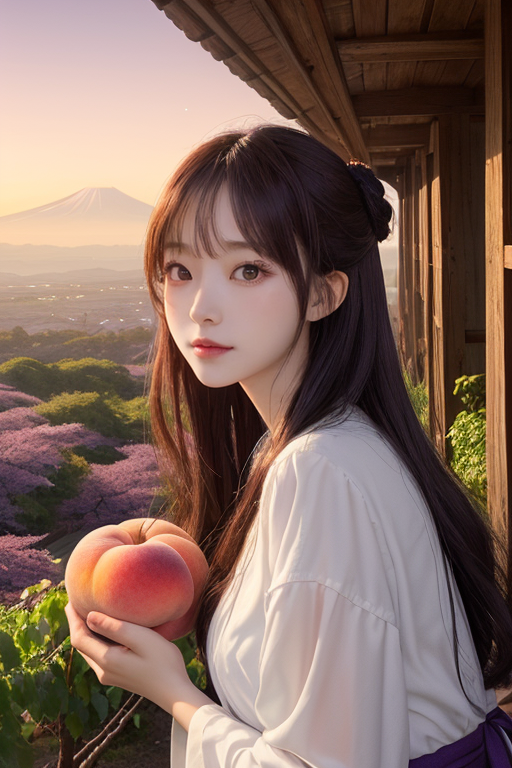

第一章 現実の山梨
あなたはまだ気づいていない。この土地にも、王がいることを。
甲府城址公園に程近いぶどう市は、早朝から活気に満ちていた。紫や緑の房が所狭しと並び、甘い香りが金の匂いと混ざり合う。観光バスが次々と到着し、土産物屋の呼び込みが飛び交う。ここは商都線、果実と観光が織りなす欲望の流れだ。その喧噪のただ中、一人の青年が静かに立っていた。彼の名はヤマナリア・ルミナ。この地を守る峰の王である。彼の目には、人々の熱気とは別の「歪み」が見えていた。地面の下、深く静かに蓄積される火山性の圧力の微かな乱れ。それは商売の熱狂とは無関係に、確実に増幅しつつあった。
「王様、今日も数値が高いです。特に富士北麓地域」
傍らに浮かぶ光の粒、主席妖精ルミナラが報告する。その声は明るいが、内容は重い。
「人々は山頂を目指し、果実を求め、富を追い求める」
ルミナラはため息をついた。
「でも、その足元が危ういことには、なかなか気が向かないんですよね」
王はうなずき、金色に縁取られた紫の瞳を細めた。高みを目指すことは善か。だが、その目線が前方と上方だけに向けられ、足元を見失う時、何が起きるのか。彼は問いを胸に、調整の刻へと向かった。

第二章 歪みの兆候
甲府城跡を訪れる観光客の流れは、かつての城下町の賑わいを彷彿とさせた。土産物屋では桃やぶどうの加工品が並び、レンタサイクルを借りてぶどう畑へ向かう人々の笑い声が聞こえる。活気に満ちたその風景の底で、峰王ヤマナリア・ルミナは微かな違和感を感じ取っていた。人々の欲望や期待が、土地そのものの「重み」と微妙にずれ始めている。地価の高騰が山麓の開発を促し、観光バスの排気ガスが清里高原の澄んだ空気を僅かに濁らせる。すべては些細な、許容範囲内の変化だ。しかし、無数に積み重なれば、それは確かな「歪み」となる。
「高みを目指すことは、必ずしも悪ではない」
ルミナラが彼の肩に止まり、囁いた。
「ですが、目指す『高み』が、本当にこの土地が求めるものと一致しているかどうか。そこが問題です」
王は答えず、富士山の裾野を流れる見えない地脈の、ほんのわずかな「焦げ」のような熱を感じていた。人々の熱意が、無意識のうちに別の圧力を生み出し始めている。彼の仕事は、その熱を冷ますことではない。方向を、ほんの少し修正することだ。

第三章 王の葛藤
甲府城跡から見下ろす盆地は、ぶどう棚の緑と住宅地の屋根が織りなす模様だった。人々はより良いワインを、より多くの観光客を、より高い利益を目指して動く。その熱気は、地中に沈む古い火山の眠りを浅くする微かな振動として、王に伝わってくる。
「これが『高み』を目指す熱量か」
王は呟いた。彼自身の向上心は、この土地の人々の欲望と共鳴し、増幅されていた。清里高原に新設されたリゾート施設の計画は、地盤に予想外の負荷をかけようとしている。彼は指を鳴らし、妖精たちに地中の圧力を分散させる微調整を命じた。崩壊を防ぐための、ほんの数パーセントの緩和だ。
「王様、あなたはこの熱気を、悪いものだと思っていますか」
ルミナラが傍らに現れた。
「……否。熱意そのものは美しい。武田信玄がこの盆地に夢を賭けたように。だが、無制限な欲望は、この土地の『歪み』を刺激する。守護とは、夢を否定することではなく、その重みが自らを押し潰さないように支えることだ」
王は、自らの理想主義が、時に現実の危ういバランスを見失わせることを知っていた。高みを目指す理由。それは、頂上に立つ栄光のためだけではない。登攀の過程そのもの、そして何より、登る者と、登られる山の、双方が壊れないための配慮なのだと、彼は今、苦く悟り始めていた。

第四章 妖精との対話
甲府城跡から見下ろす街並みは、ブドウ棚の緑と瓦屋根の色が混ざり合い、確かな営みの熱を放っていた。ルミナラは、王の隣に小さな光となって浮かび、活気に満ちた盆地を見つめた。
「王さま、商いってね、根っこは『足りない』と『ありすぎる』を繋ぐことなんですよ」
彼女の声は、そよ風のように軽やかだった。
「この土地の人は、山が与えてくれるものに、さらに手を加えて価値を増やしてきた。ブドウをワインに、桃を缶詰に。それは欲深さじゃなくて、『もっと良くしたい』という、山への返礼みたいなものだと思うんです」
王は黙って聞く。彼女は続けた。
「高みを目指す理由？ 頂上に旗を立てるためだけじゃないでしょう。登る過程で、自分の足元の土が、どれだけ多くの命と歴史でできているかに気づくためです。商いも同じ。モノや金の流れの底には、人の『生きたい』っていう、ごく普通の願いが流れてる。その願いの重さが、歪みを生まない程度であるように、そっと調整する。それが私たちの仕事です」
王は、妖精の言葉に、理想だけでは測れない現実の深さを感じた。

第五章 微調整と余韻
甲府城跡から見下ろす街並みは、夕暮れの光を浴びて葡萄色に染まっていた。観光バスの列、ワイナリーへ向かう人々の笑い声。活気は、この土地の地脈を震わせる微かな歪みでもあった。
ヤマナリア・ルミナは、その歪みを感じていた。富士山の伏流水が集まる忍野八海の水面に、妖精ルミナラが描いた微細な波紋を見つめながら。彼女の手には、清里高原を吹き抜ける風の速度、昇仙峡の渓流が岩を削る一瞬の間隔、果樹園で収穫される桃の重さの分布。すべてがデータとして流れ込む。彼は指をわずかに動かした。
観光バスの一台のタイヤの空気圧が、0.01気圧調整される。ワイナリーの試飲コーナーで、グラスが倒れかかるのを、ほんの少し風が支える。果実市場で、高く積まれた箱の一番上が、誰にも気づかれずに安定する。
誰も気づかない。巨大な災害が起きないように、日常の些細な「ずれ」を、膨大な計算の末に微調整する。これが王の仕事だ。高みを目指す理由は、頂上に立つ栄光のためではない。登攀の過程で、自分が支えている足場の、無数の命と営みの重さを知るため。そして、その重さが崩れないように、ただ、そっと手を添え続けるためだ。
夕闇が深まり、最初の星が富士の稜線の上に輝いた。
あなたの町にも、王がいる。